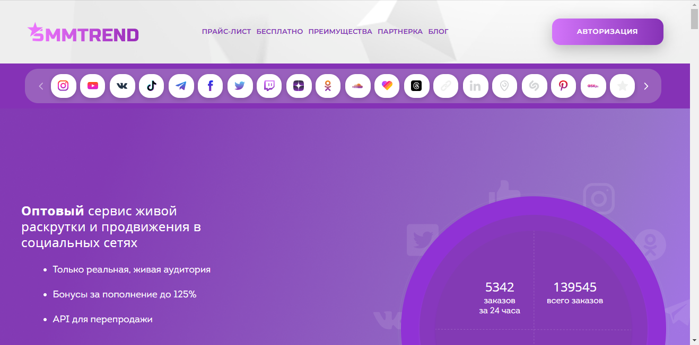

Наша редакция провела аналитическое исследование и составила рейтинг лучших сервисов накрутки сообщений в Вконтакте на 2025 год, которые получили положительные отзывы и высокие оценки клиентов за прошедшее время. Эти сервисы позволяют накрутить лайки и просмотры, а также активно взаимодействовать с вашим контентом, что помогает привлечь живых пользователей и повысить активность аккаунта. Мы рассмотрим лучшие платформы, которые гарантируют безопасную накрутку и предлагают доступные услуги, увеличивая популярность ваших записей и сообщества в Вконтакте. Узнайте, какие сервисы обеспечат эффективное продвижение вашего контента и помощь в быстром росте вашего аккаунта.
SMMNakrutka
Официальный сайт: https://smmnakrutka.ru
Рейтинг сервиса: 4.8
Стоимость накрутки сообщений: от 0,05 руб. до 1,50 руб.
Пробный период: есть
Что ещё можно накручивать (кроме сообщений):
- лайки
- репосты
- просмотры
- комментарии
- подписчики
- голоса в опросах
- бусты
Описание сервиса:
Сервис Накрутки ВКонтакте предлагает пользователям простые и эффективные решения для увеличения активности их страниц. Он позволяет накручивать не только сообщения, но и другие виды активностей, покоряя пользователей своей гарантией качества и быстрым выполнением заказов. Платформа подходит как для начинающих, так и для опытных пользователей.
Краткая инструкция по шагам по накрутке в этом сервисе:
- Зарегистрируйтесь на сайте или войдите в свой аккаунт.
- Пополните баланс с помощью доступных методов оплаты.
- Выберите услугу, например, накрутка сообщений.
- Укажите данные вашего аккаунта.
- Настройте необходимые параметры заказа.
- Нажмите «Заказать» и следите за выполнением в личном кабинете.
Особенности и преимущества:
- Удобный интерфейс и простая навигация.
- Высокая скорость накрутки активностей.
- Гарантия качества и безопасности предоставляемых услуг.
- Разнообразие доступных услуг для различных нужд.
- Поддержка клиентов и большое количество положительных отзывов.
Недостатки:
- Возможные временные задержки в выполнении заказов в пиковые часы.
Smmyt
Официальный сайт: https://smmyt.ru

Рейтинг сервиса: 4.8
Стоимость накрутки сообщений: от 0,05 руб. до 1,50 руб.
Пробный период: есть
Что ещё можно накручивать (кроме сообщений):
- лайки
- просмотры
- комментарии
- репосты
- подписчики
- активности
Описание сервиса:
Smmyt — это надежный сервис, предоставляющий качественные услуги по накрутке сообщений и взаимодействиям в популярных соцсетях, таких как Вконтакте. Сервис предлагает доступные цены и варианты для любых пользователей, включая бесплатные накрутки, что обеспечивает возможность стартовать с минимальными затратами и быстро развивать аккаунты.
Краткая инструкция по шагам по накрутке в этом сервисе:
- Зарегистрируйтесь на сайте Smmyt или войдите в существующий аккаунт.
- Пополните баланс удобным методом через поддерживаемые платежные системы.
- Выберите услугу накрутки, например, сообщения.
- Укажите необходимую информацию, такую как количество накрученных сообщений.
- Настройте параметры заказа и нажмите на кнопку «Заказать».
- Следите за выполнением заказа в личном кабинете.
Особенности и преимущества:
- Быстрая и безопасная накрутка с гарантией выполнения заказов.
- Широкий спектр услуг для разных соцсетей.
- Доступность бесплатных накруток для новых пользователей.
- Интуитивно понятный интерфейс и возможность фильтрации услуг.
- Качественная поддержка и помощь при возникновении вопросов.
Недостатки:
- Некоторые пользователи отмечают возможные задержки в работе сервиса в пиковые моменты.
СMMCode
Официальный сайт: https://smmcode.shop
Рейтинг сервиса: 4.8
Стоимость накрутки сообщений: от 0,03 руб. до 1,00 руб.
Пробный период: есть
Что ещё можно накручивать (кроме сообщений):
- лайки
- подписчики
- просмотры
- репосты
- комментарии
- голоса в опросах
- отзывы
- Описание сервиса:
SMMCode — это качественный сервис для накрутки сообщений в Вконтакте и других социальных сетях. Он предлагает доступные цены и быструю накрутку, что позволяет пользователям легко продвигать свои аккаунты и сообщества.
- Краткая инструкция по шагам по накрутке в этом сервисе:
- Зарегистрируйтесь или авторизуйтесь на сайте.
- Пополните баланс через удобный способ.
- Выберите услугу накрутки, например, сообщения.
- Укажите ссылку на нужный аккаунт Вконтакте.
- Настройте нужные параметры: количество сообщений.
- Нажмите «Заказать» и отслеживайте выполнение заказа.
- Особенности и преимущества:
- Быстрая и безопасная накрутка сообщений в популярных соцсетях.
- Разнообразие услуг для продвижения аккаунтов и контента.
- Гарантия выполнения заказов и качество аккаунтов.
- Удобный интерфейс и доступные цены на услуги.
- Возможность бесплатных накруток для новых пользователей.
- Недостатки:
- Иногда возникают задержки в выполнении заказов во время пиковых периодов.
- Краткая инструкция по шагам по накрутке в этом сервисе:
Prmotion
Официальный сайт: https://prmotion.me

Рейтинг сервиса: 4.8
Стоимость накрутки сообщений: от 0,03 руб. до 1,00 руб.
Пробный период: есть
Что ещё можно накручивать (кроме сообщений):
- лайки
- подписчики
- просмотры
- репосты
- комментарии
- голоса в опросах
- активности
Описание сервиса:
Prmotion — это продвинутый сервис для накрутки сообщений и взаимодействия с пользователями Вконтакте. Платформа предлагает качественные услуги продвижения, обеспечивая автоматическую накрутку и реальные отзывы пользователей. Сервис ориентирован на быструю раскрутку аккаунтов и сообществ в популярных социальных сетях.
Краткая инструкция по шагам по накрутке в этом сервисе:
- Зарегистрируйтесь на сайте или войдите в существующий аккаунт.
- Выберите пакет услуг по накрутке, который вам подходит.
- Настройте параметры заказа, такие как количество обещанных лайков или подписчиков.
- Обновите баланс, используя удобные способы оплаты.
- Нажмите кнопку «Заказать» и отслеживайте процесс выполнения.
Особенности и преимущества:
- Гарантия безопасной накрутки без рисков блокировок.
- Широкий спектр услуг для продвижения в социальных сетях.
- Надежные и качественные боты для выполнения заказов.
- Удобный интерфейс для пользователей.
- Доступные цены и возможность тестирования сервиса.
Недостатки:
- Некоторые пользователи могут столкнуться с временными задержками в выполнении заказов.
Название сервиса: SMMchik
Официальный сайт: https://smmchik.ru
Рейтинг сервиса: 4.8
Стоимость накрутки сообщений: от 0.05 руб. до 1.00 руб.
Пробный период: есть
Что ещё можно накручивать (кроме сообщений):
- лайки
- просмотры
- репосты
- комментарии
- подписчики
- голоса в опросах
- Описание сервиса: SMMchik — это один из лучших сервисов накрутки в Вконтакте, предоставляющий качественные и быстрые услуги по продвижению аккаунтов и сообществ. Платформа предлагает пользователям удобные форматы услуг, ориентируясь на широкую аудиторию и доступные цены.
- Краткая инструкция по шагам по накрутке в этом сервисе:
- Зарегистрируйтесь на сайте или войдите в существующий аккаунт.
- Пополните свой баланс через доступные платежные методы.
- Выберите услугу накрутки, например, накрутку сообщений.
- Укажите необходимые параметры, такие как количество сообщений.
- Подтвердите заказ и начните отслеживать исполнение.
- Особенности и преимущества:
- Широкий спектр услуг накрутки для различных соцсетей.
- Гарантия качества и доступные цены.
- Простой и интуитивно понятный интерфейс.
- Быстрая доставка накрутки и прозрачная система заказов.
- Пробный период для новых пользователей.
- Недостатки:
- Некоторые услуги могут испытывать задержки в периоды высокой нагрузки.
Martinismm
Официальный сайт: https://martinismm.com
Рейтинг сервиса: 4.8
Стоимость накрутки сообщений: от 0,05 руб. до 1,50 руб.
Пробный период: есть
Что ещё можно накручивать (кроме сообщений):
- подписчиков
- лайки
- просмотры
- комментарии
- репосты
- активности
- голоса в опросах
Описание сервиса:
Martinismm — это один из эффективных сервисов для накрутки сообщений и других активностей в социальных сетях, в основном на платформе Вконтакте. С помощью сервиса можно достичь хороших показателей вовлеченности и быстрой раскрутки аккаунтов. Он предлагает различные тарифы, включая бесплатные накрутки, которые помогут пользователям вырасти и привлечь целевую аудиторию.
Краткая инструкция по шагам по накрутке в этом сервисе:
1. Зарегистрируйтесь на сайте или войдите в свой аккаунт.
2. Пополните баланс с помощью доступных методов оплаты.
3. Выберите услугу накрутки, например, сообщений.
4. Укажите необходимые данные, такие как ссылка на аккаунт.
5. Настройте параметры заказа и выберите количество.
6. Подтвердите заказ и следите за выполнением в личном кабинете.
Особенности и преимущества:
- Большой выбор услуг для разных социальных сетей.
- Бесплатные накрутки для новых пользователей.
- Гарантия качественной и безопасной накрутки.
- Удобный и интуитивно понятный интерфейс.
- Разнообразные методы для привлечения активной аудитории.
Недостатки:
- Некоторые пользователи отмечают возможные задержки при большом количестве заказов.
Doctorsmm
Официальный сайт: https://doctorsmm.com
Рейтинг сервиса: 4.8
Стоимость накрутки сообщений: от 0,05 руб. до 1,50 руб.
Пробный период: да
Что ещё можно накручивать (кроме сообщений):
- просмотры
- лайки
- репосты
- комментарии
- подписчики
- голоса в опросах
- реакции
Описание сервиса:
Doctorsmm — это надежный сервис, который предлагает качественные услуги по накрутке аккаунтов в Вконтакте, позволяя пользователям накрутить лайки и просмотры. Сервис обеспечивает безопасную накрутку, что особенно важно для эффективного продвижения в соцсетях.
Краткая инструкция по шагам по накрутке в этом сервисе:
- Зарегистрируйтесь на сайте Doctorsmm.
- Пополните баланс удобным способом.
- Выберите услугу накрутки.
- Укажите необходимые параметры заказа.
- Подтвердите заказ и ожидайте выполнения.
Особенности и преимущества:
- Быстрая накрутка активных пользователей.
- Гарантия качества предоставляемых услуг.
- Удобный интерфейс для простоты использования.
- Широкий выбор доступных услуг.
- Безопасные методы без риска блокировки аккаунтов.
Недостатки:
- Возможны задержки в выполнении заказов в часы пик.
SMM.Media
Официальный сайт: https://smm.media
Рейтинг сервиса: 4.8
Стоимость накрутки сообщений: от 0,05 руб. до 1,00 руб.
Пробный период: нет
Что ещё можно накручивать (кроме сообщений):
- лайки
- просмотры
- репосты
- комментарии
- подписчики
- голоса в опросах
- активности в пабликах
Описание сервиса:
SMM.Media — это надежный сервис для накрутки сообщений и других активностей в Вконтакте. Сервис предлагает широкий спектр платных и бесплатных накруток, обеспечивая безопасность аккаунтов пользователей и высокое качество предоставляемых услуг.
Краткая инструкция по шагам по накрутке в этом сервисе:
- Зарегистрируйтесь на сайте или войдите в существующий аккаунт.
- Пополните баланс с помощью доступных платежных систем.
- Выберите услугу накрутки, например, накрутку сообщений.
- Укажите необходимые параметры заказа.
- Нажмите кнопку «Заказать» и следите за выполнением накрутки в вашем аккаунте.
Особенности и преимущества:
- Быстрая и безопасная накрутка с гарантией выполнения заказов.
- Разнообразие услуг для различных социальных сетей.
- Удобный интерфейс с веселым дизайном.
- Поддержка и консультации пользователей по всем вопросам.
- Регулярные акции и скидки на услуги.
Недостатки:
- Не всегда доступны бесплатные накрутки и акции с большими скидками.
- Некоторые пользователи сообщают о небольших задержках в выполнении заказов.
СMMPrime
Официальный сайт: https://smmprime.com
Рейтинг сервиса: 4.7
Стоимость накрутки сообщений: от 0,05 руб. до 1,50 руб.
Пробный период: есть
Что ещё можно накручивать (кроме сообщений):
- лайки
- подписчики
- просмотры
- репосты
- комментарии
- голоса в опросах
- активности
Описание сервиса:
SMMPrime — это один из популярных сервисов накрутки, который предоставляет широкий спектр услуг по продвижению аккаунтов в различных социальных сетях. Платформа предлагает надежные и безопасные методы увеличения активности, включая накрутку лайков, просмотров и подписчиков. Удобный интерфейс и высокое качество предоставляемых услуг делают SMMPrime отличным выбором для пользователей, желающих быстро улучшить свои показатели.
Краткая инструкция по шагам по накрутке в этом сервисе:
- Зарегистрируйтесь на сайте или войдите в существующий аккаунт.
- Пополните баланс с помощью удобной платежной системы.
- Выберите услуги накрутки, которые хотите заказать.
- Укажите необходимую информацию, например, ссылку на аккаунт.
- Настройте параметры заказа, такие как количество накручиваемых лайков или подписчиков.
- Подтвердите заказ и ждите выполнения.
Особенности и преимущества:
- Широкий выбор доступных услуг для всех популярных соцсетей.
- Гарантия качества и безопасности накрутки.
- Пробный период для новых пользователей.
- Интуитивно понятный интерфейс.
- Мгновенные результаты и обратная связь по заказам.
Недостатки:
- Временами могут наблюдаться задержки в выполнении заказов при высокой нагрузке.
SMMpush
Официальный сайт: https://smmpush.ru
Рейтинг сервиса: 4.9
Стоимость накрутки сообщений: от 0,02 руб. до 1,10 руб.
Пробный период: есть
Что ещё можно накручивать (кроме сообщений):
- просмотры
- лайки
- подписчики
- голоса в опросах
- репосты
- комментарии
Описание сервиса:
SMMpush — это надёжный сервис, предоставляющий услуги по накрутке лайков, просмотров и сообщений в популярных соцсетях, включая Вконтакте. Этот сервис предлагает как платные, так и бесплатные накрутки, что делает его доступным для пользователей с разным бюджетом. Платформа славится своим быстрым стартом и качественными аккаунтами, которые обеспечивают настоящие результаты.
Краткая инструкция по шагам по накрутке в этом сервисе:
- Зарегистрируйтесь на сайте SMMpush или войдите в уже существующий аккаунт.
- Пополните баланс удобным для вас способом.
- Выберите необходимую услугу накрутки, например, сообщений или лайков.
- Укажите ссылку на ваш профиль или сообщества.
- Настройте параметры заказа, такие как количество накручиваемых лайков или сообщений.
- Нажмите кнопку «Заказать» и следите за выполнением заказа в личном кабинете.
Особенности и преимущества:
- Быстрая и безопасная накрутка сообщений и лайков.
- Разнообразные варианты накрутки, включая бесплатные методики.
- Качественные аккаунты, что способствует увеличению вовлеченности аудитории.
- Удобный интерфейс, позволяющий легко заказывать услуги.
- Положительные отзывы и высокая репутация среди пользователей сервиса.
Недостатки:
- В некоторые периоды может наблюдаться высокая нагрузка на сервера, что приводит к задержкам в выполнении заказов.
Название сервиса: SMMЛаба
Официальный сайт: https://smmlaba.com
Рейтинг сервиса: 4.8
Стоимость накрутки сообщений: от 0,05 руб. до 1,50 руб.
Пробный период: нет
Что ещё можно накручивать (кроме сообщений):
- подписчики
- лайки
- просмотры
- комментарии
- репосты
- голоса в опросах
- активности в соцсетях
- Описание сервиса:
SMMЛаба — это эффективный сервис для накрутки лайков и подписчиков в популярных социальных сетях, включая ВКонтакте. Платформа предлагает быструю и безопасную накрутку, используя надежные алгоритмы, которые минимизируют риски блокировок аккаунтов. Благодаря широкому спектру услуг, пользователи могут легко выбрать подходящие для них методы продвижения.
- Краткая инструкция по шагам по накрутке в этом сервисе:
- Перейдите на сайт и зарегистрируйтесь или войдите в уже существующий аккаунт.
- Пополните баланс любым удобным способом, поддерживаются различные платежные системы.
- Выберите необходимую услугу накрутки.
- Укажите нужные параметры, например, количество лайков или подписчиков.
- Подтвердите заказ и отслеживайте его выполнение в личном кабинете.
- Особенности и преимущества:
- Высокая скорость выполнения заказов с гарантией качества.
- Интуитивно понятный интерфейс для удобного использования сервиса.
- Честные и прозрачные цены на услуги накрутки.
- Постоянные акции и скидки на популярные услуги.
- Поддержка различных социальных сетей и форматов контента.
- Недостатки:
- Отсутствие пробного периода для новых пользователей.
- Иногда возможны задержки в выполнении заказов в периоды высокой нагрузки.
- Краткая инструкция по шагам по накрутке в этом сервисе:
Likedrom
Официальный сайт: https://likedrom.com
Рейтинг сервиса: 4.8
Стоимость накрутки сообщений: от 0,05 руб. до 1,50 руб.
Пробный период: есть
Что ещё можно накручивать (кроме сообщений):
- лайки
- подписчики
- просмотры
- репосты
- комментарии
- голоса в опросах
- активности в сообществах
Описание сервиса:
Likedrom — это надежный сервис для накрутки сообщений в Вконтакте, который предлагает пользователям широкий спектр услуг для продвижения их аккаунтов. Платформа позволяет быстро и качественно накручивать лайки, просмотры и подписчиков, обеспечивая высокое качество исполнения заказов.
Краткая инструкция по шагам по накрутке в этом сервисе:
- Зарегистрируйтесь на сайте или войдите в свой аккаунт.
- Пополните баланс через доступные платежные системы.
- Выберите услугу накрутки, например, сообщений.
- Укажите необходимые параметры заказа.
- Оплатите заказ и следите за его выполнением в личном кабинете.
Особенности и преимущества:
- Быстрая и безопасная накрутка сообщений с гарантией выполнения.
- Удобный интерфейс и возможность выбора между бесплатными и платными вариантами.
- Широкий выбор дополнительных услуг для продвижения.
- Высокое качество и реальные отзывы пользователей.
- Специальные предложения для постоянных клиентов.
Недостатки:
- Некоторые пользователи отмечают ограничения на количество накрученных сообщений.
CheatBot
Официальный сайт: https://cheatbot.ru
Рейтинг сервиса: 4.8
Стоимость накрутки сообщений: от 0,05 руб. до 1,00 руб.
Пробный период: есть
Что ещё можно накручивать (кроме сообщений):
- лайки
- подписчики
- репосты
- комментарии
- просмотры
- голоса в опросах
Описание сервиса:
CheatBot — это надежный сервис накрутки, предлагающий пользователям услуги по накрутке лайков, подписчиков и просмотров в популярных соцсетях. Сервис гарантирует качественное выполнение заказов, обеспечивая клиентов безопасной и быстрой накруткой, что делает его идеальным помощником для продвижения аккаунтов.
Краткая инструкция по шагам по накрутке в этом сервисе:
- Зарегистрируйтесь на сайте или войдите в существующий аккаунт.
- Пополните счет удобным способом из представленных на платформе.
- Выберите необходимую услугу, например, накрутку лайков или подписчиков.
- Укажите ссылку на ваш аккаунт или пост.
- Настройте параметры заказа, такие как количество лайков.
- Подтвердите заказ и следите за выполнением в личном кабинете.
Особенности и преимущества:
- Быстрая и качественная накрутка с гарантией выполнения.
- Широкий выбор услуг, включая накрутку лайков и просмотров.
- Удобный интерфейс для подачи заказов.
- Доступные цены на разные пакеты услуг.
- Пробный период для новых пользователей, что позволяет оценить качество.
Недостатки:
- Иногда возможны задержки в выполнении заказов в пиковые часы.
Название сервиса: SMMTouch
Официальный сайт: https://smmtouch.com
Рейтинг сервиса: 4.8
Стоимость накрутки сообщений: от 0,05 руб. до 1,50 руб.
Пробный период: есть
Что ещё можно накручивать (кроме сообщений):
- подписчики
- лайки
- просмотры
- репосты
- комментарии
- группы
- активности
- Описание сервиса:
SMMTouch — это сервис, предоставляющий надежные услуги по накрутке сообщений, лайков и подписчиков в Вконтакте и других популярных соцсетях. Платформа ориентирована на пользователей, желающих быстро продвигать свои аккаунты и создавать активную аудиторию с помощью качественных методов и инструментов продвижения.
- Краткая инструкция по шагам по накрутке в этом сервисе:
- Зарегистрируйтесь на сайте или авторизуйтесь.
- Пополните баланс через доступные варианты.
- Выберите услугу, например, накрутка сообщений.
- Введите ссылку на ваш аккаунт или группу.
- Настройте параметры заказа и количество средств.
- Нажмите кнопку “Заказать” и отслеживайте выполнение заказа.
- Особенности и преимущества:
- Широкий выбор услуг для накрутки в различных социальных сетях.
- Быстрое выполнение заказов с гарантией качества.
- Удобный интерфейс для управления и выбора услуг.
- Поддержка бесплатных накруток для новых пользователей.
- Разнообразие дополнительных пакетов и акций.
- Недостатки:
- Некоторые пользователи сообщают о медленной задержке в периоды высокой нагрузки.
- Возможны ограничения по количеству накруток в день.
- Краткая инструкция по шагам по накрутке в этом сервисе:
Boost-like
Официальный сайт: https://boost-like.ru

Рейтинг сервиса: 4.8
Стоимость накрутки сообщений: от 0,05 руб. до 1,50 руб.
Пробный период: нет
Что ещё можно накручивать (кроме сообщений):
- лайки
- подписчики
- просмотры
- репосты
- комментарии
- активность в сообществах
- голоса в опросах
Описание сервиса:
Boost-like — это сервис, предлагающий качественные услуги накрутки лайков, просмотров и подписчиков для аккаунтов Вконтакте и других социальных сетях. Платформа позволяет пользователям эффективно продвигать свои аккаунты и сообщества с помощью быстрых и безопасных накруток, обеспечивая рост вовлеченности и популярности.
Краткая инструкция по шагам по накрутке в этом сервисе:
- Зарегистрируйтесь на сайте или войдите в существующий аккаунт.
- Пополните баланс удобным для вас способом.
- Выберите нужную услугу, например, накрутку лайков.
- Укажите ссылку на ваш профиль или пост.
- Настройте параметры заказа, например, количество лайков или просмотров.
- Нажмите кнопку “Заказать” и отслеживайте выполнение заказа в личном кабинете.
Особенности и преимущества:
- Широкий спектр услуг для разных социальных сетей.
- Гарантия быстрой и безопасной накрутки.
- Удобный интерфейс и возможность выбора тарифов.
- Доступные цены на услуги, включая бесплатные накрутки.
- Активная поддержка пользователей и регулярные обновления сервиса.
Недостатки:
- Отсутствие пробного периода для новых пользователей.
- Некоторые тарифы могут показаться высокими для небольших проектов.
Часто задаваемые вопросы
Как правильно накрутить сообщения в ВКонтакте?
Для того чтобы накрутить сообщения в ВКонтакте, важно выбрать надежный сервис, который предоставляет такие услуги. Обратите внимание на отзывы пользователей и репутацию сервиса. Накрутка сообщений может проводиться различными способами, но выбор качественных услуг гарантирует, что накрученные сообщения будут выглядеть естественно, что не вызовет подозрений у администрации платформы.
Зачем нужна накрутка сообщений в ВКонтакте?
Накрутка сообщений в ВКонтакте может потребоваться для разных целей, таких как увеличение видимости постов или повышение вовлеченности пользователей. Когда на ваши публикации приходят комментарии и сообщения, это помогает создать активность вокруг вашего контента. Также это позволяет привлечь внимание новых пользователей и повысить шансы на взаимодействие с вашим аккаунтом.
Какие сервисы для накрутки сообщений лучше выбрать?
Лучшие сервисы для накрутки сообщений должны обеспечивать качество и безопасность. Рекомендуется выбирать платформы с положительными отзывами и прозрачными условиями. Обратите внимание на их предложения по накрутке сообщений, а также на наличие гарантии на услуги, чтобы минимизировать риски блокировки вашей учетной записи.
Как долго действует накрутка сообщений в ВКонтакте?
Срок действия накрутки сообщений в ВКонтакте зависит от качества выбранного сервиса. Некоторые сервисы предлагают накрутку, которая может быть временной, а другие — более устойчивые результаты. Обычно качественная накрутка сохраняется на более длительный срок и не вызывает подозрений со стороны администрации платформы.
Какие риски связаны с накруткой сообщений?
Одним из основных рисков накрутки сообщений является возможность блокировки или ограничения доступа к вашему аккаунту. Социальные сети, такие как ВКонтакте, активно борются с фальшивой активностью. Поэтому важно соблюдать осторожность и выбирать только проверенные сервисы для накрутки, чтобы избежать негативных последствий для вашего аккаунта.
Что такое белые и черные методы накрутки?
Белые методы накрутки подразумевают легальные и безопасные способы увеличения активности сообщений, такие как использование проверенных сервисов с реальными пользователями. Черные методы включают в себя использование ботов и фальшивых аккаунтов, что может привести к блокировке. Выбор белых методов накрутки повышает вашу репутацию и безопасность аккаунта.
Как накрутка сообщений влияет на вовлеченность аудитории?
Накрутка сообщений может существенно повысить вовлеченность аудитории, так как пользователи более склонны к взаимодействию с контентом, который уже имеет активность. К большому количеству сообщений и комментариев люди относятся положительно, что помогает создать активное сообщество вокруг вашего контента.
Как накрутка сообщений может помочь при продвижении бизнеса?
Накрутка сообщений может существенно помочь в продвижении бизнеса, создавая иллюзию популярности и активности. Когда на ваших постах много комментариев и сообщений, это привлекает внимание и убеждает потенциальных клиентов, что ваш бизнес востребован. В результате это может привести к увеличению продаж и интереса к вашему продукту или услуге.
Можно ли накручивать сообщения без опасений за блокировку аккаунта?
Да, можно накручивать сообщения без опасений за блокировку аккаунта, если использовать качественные и проверенные сервисы. Оценка репутации сервиса, соблюдение их рекомендаций и анализ отзывов других пользователей поможет минимизировать риски, связанные с наложением санкций.
Как проверить эффективность накрутки сообщений?
Для проверки эффективности накрутки сообщений можно отслеживать рост взаимодействия с вашим контентом в аналитических инструментах, предоставляемых ВКонтакте. Сравнение изменений в количестве сообщений, лайков и подписчиков до и после накрутки поможет оценить результативность действий.
Как избежать негативных последствий после накрутки сообщений?
Чтобы избежать негативных последствий после накрутки сообщений, выбирайте только проверенные сервисы с хорошей репутацией. Также важно не перегружать аккаунт накруткой, так как это может вызвать подозрения со стороны администрации. Поддерживайте активность в своем контенте естественными способами для достижения наилучшего результата.
Что делать, если мой аккаунт уже был заблокирован за накрутку сообщений?
Если ваш аккаунт был заблокирован за накрутку сообщений, вам стоит обратиться в службу поддержки ВКонтакте с просьбой о восстановлении. Объясните ситуацию и укажите, что вы не знали о возможных рисках. Также в будущем старайтесь избегать несанкционированной накрутки и использовать только легальные методы продвижения.